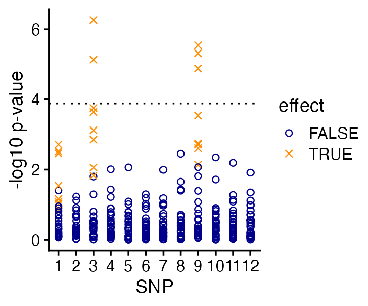
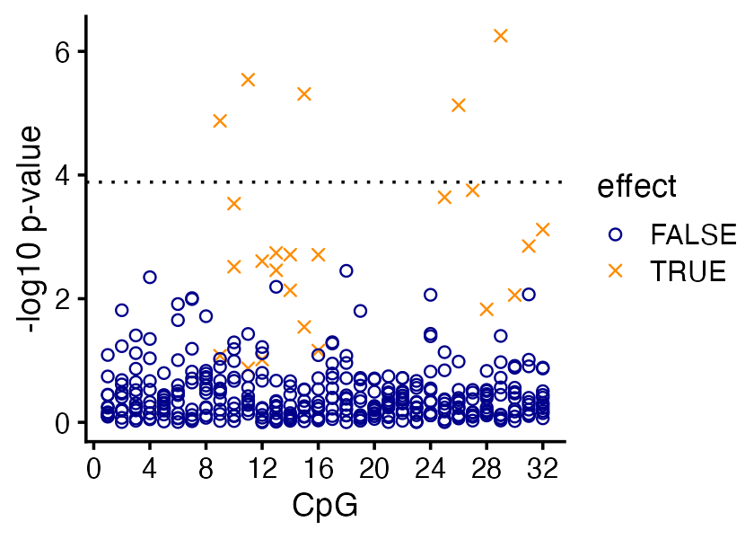
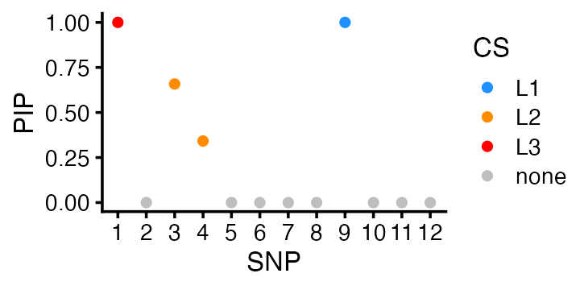
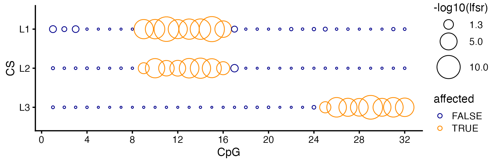

vignettes/small_demo2.Rmd
small_demo2.RmdIn this vignette we illustrate some of the key ideas underlying fSuSiE by applying fSuSiE to analyze a toy methylation data set.
Load the packages used in this vignette.
Set the seed so that the results can be reproduced.
set.seed(1)We simulate a “toy” methylation data set in which the methylation levels of 100 individuals are measured at 32 CpGs.
Among the 12 candidate SNPs, 3 SNPs affect the methylation levels: 2 SNPs affect the methylation levels of the same cluster of 8 CpGs, and the other SNP affects the methylation levels of different cluster of 8 CpGs.
n <- 100
m <- 32
p <- 12Generate the SNP minor allele frequencies (MAFs):
maf <- 0.05 + 0.45*runif(p)Generate ids for SNPs and CpGs.
Simulate the genotypes:
X <- (runif(n*p) < maf) +
(runif(n*p) < maf)
X <- matrix(X,n,p,byrow = TRUE)
storage.mode(X) <- "double"
colnames(X) <- snpidsThis is the matrix that determines how the SNP alleles change the methylation levels.
F <- matrix(0,p,m)
F[1,9:16] <- 2
F[9,9:16] <- (-2)
F[3,25:32] <- 2
rownames(F) <- snpids
colnames(F) <- cpgidsSimulate the methylation levels at the CpGs:
To make the example more realistic, the methylation levels are all zero or higher.
In a typical methylation QTL mapping analysis, one would perform
association tests for all the CpG-SNP pairs. Here we will simply use the
standard linear regression function in R, lm(), to perform
the QTL mapping.
assoc <- matrix(0,m,p)
rownames(assoc) <- cpgids
colnames(assoc) <- snpids
for (i in 1:m) {
for (j in 1:p) {
dat <- data.frame(x = X[,j],y = Y[,i])
fit <- lm(y ~ x,dat)
assoc[i,j] <- summary(fit)$coefficients["x","Pr(>|t|)"]
}
}Having performed these tests for association, we can examine the associations in two different ways, by SNP and by CpG site. Let’s start with the SNP-centered view:
pdat <- data.frame(cpg = rep(1:m,times = p),
snp = rep(1:p,each = m),
effect = as.vector(t(F != 0)),
pval = as.vector(assoc))
pdat <- transform(pdat,pval = -log10(pval))
threshold <- -log10(0.05/(m*p))
ggplot(pdat,aes(x = snp,y = pval,shape = effect,color = effect)) +
geom_point(size = 1.5) +
geom_hline(yintercept = threshold,color = "black",linetype = "dotted") +
scale_x_continuous(breaks = 1:p) +
scale_shape_manual(values = c(1,4)) +
scale_color_manual(values = c("darkblue","darkorange")) +
labs(x = "SNP",y = "-log10 p-value") +
theme_cowplot(font_size = 11)
Based on these simple association tests, we would identify two out of the three causal SNPs. (And perhaps we would identify all three causal SNPs if we were a bit more careful about multiple testing correction—here we just used the basic Bonferroni correction, which tells us that only the CpG-SNPs pairs with p-values less than 0.0001 are significant.)
But more importantly, this view alone doesn’t tell us which CPGs are affected by the SNPs.
This is the CpG-centered view:
ggplot(pdat,aes(x = cpg,y = pval,shape = effect,color = effect)) +
geom_point(size = 1.5) +
geom_hline(yintercept = threshold,linetype = "dotted") +
scale_x_continuous(breaks = c(0,seq(4,32,4))) +
scale_shape_manual(values = c(1,4)) +
scale_color_manual(values = c("darkblue","darkorange")) +
labs(x = "CpG",y = "-log10 p-value") +
theme_cowplot(font_size = 11)
From the association test p-values alone it is quite clear that the affected CpG sites “cluster” in two continuous regions, but it is less clear exactly which CpG sites in these clusters are affected.
But more importantly, this view alone doesn’t tell us which SNPs are affecting the changes in the methylation levels at these CpGs.
Let’s now contrast the above QTL mapping analysis with an analysis of the methylation data using fSuSiE. First we fit the fSuSiE model to the data. Notice that we only a fit a single model to all the data:
fit <- susiF(Y,X,L = 3,filter_cs = FALSE,prior = "mixture_normal",
post_processing = "HMM")(In this example it is assumed that we know that there are three causal SNPs, but more generally this number can be estimated.)
fSuSiE indeed correctly produced 3 credible sets (95% CSs) each containing one of the causal SNPs:
fit$cs
# [[1]]
# SNP-9
# 9
#
# [[2]]
# SNP-3
# 3
#
# [[3]]
# SNP-1
# 1This result can be visualized using a “PIP plot” (PIP = posterior inclusion probability):
pdat <- data.frame(SNP = 1:p,
PIP = fit$pip,
CS = rep("none",p))
pdat$CS[fit$cs[[1]]] <- "L1"
pdat$CS[fit$cs[[2]]] <- "L2"
pdat$CS[fit$cs[[3]]] <- "L3"
pdat <- transform(pdat,CS = factor(CS))
ggplot(pdat,aes(x = SNP,y = PIP,fill = CS)) +
geom_point(shape = 21,size = 2,color = "white") +
scale_x_continuous(breaks = 1:p) +
scale_fill_manual(values = c("dodgerblue","darkorange","red","gray")) +
theme_cowplot(font_size = 10)
Again, fSuSiE very confidently identified the correct three causal SNPs, whereas this was not the case in the QTL mapping. The key difference is that fSuSiE fits a single model to all the data.
fSuSiE also gives a more coherent view of changes to the CpG sites and how they are affected by the individual causal SNPs (or, more precisely, by the individual CSs):
pdat <- data.frame(CS = rep(c("L1","L2","L3"),each = m),
CpG = rep(1:m,times = 3),
lfsr = unlist(fit$lfsr_func),
affected = as.vector(t(F[unlist(fit$cs),]) != 0),
stringsAsFactors = FALSE)
pdat <- transform(pdat,
CS = factor(CS,c("L3","L2","L1")),
lfsr = -log10(lfsr))
ggplot(pdat,aes(x = CpG,y = CS,size = lfsr,color = affected)) +
geom_point(shape = 1) +
scale_x_continuous(breaks = c(0,seq(4,32,4))) +
scale_color_manual(values = c("darkblue","darkorange")) +
scale_size(range = c(0.5,10),breaks = c(1.3,5,10)) +
labs(size = "-log10(lfsr)") +
theme_cowplot(font_size = 10)
Indeed, the significance tests (local false sign rate) break down the support for affected CpGs separately for each CS (i.e., for each causal SNP), and therefore it is quite evident from the fSuSiE results that two of the causal SNPs affect the same CpG cluster, and the other causal SNP affects a different CpG cluster.
The local false sign rates (lfsrs) quantify the support the CpG sites being affected, and in this example the CpG sites with the smallest lfsrs (largest circles in the plot) are indeed the affected CpGs.
This is the version of R and the packages that were used to generate these results.
sessionInfo()
# R version 4.3.3 (2024-02-29)
# Platform: aarch64-apple-darwin20 (64-bit)
# Running under: macOS Sonoma 14.7.1
#
# Matrix products: default
# BLAS: /Library/Frameworks/R.framework/Versions/4.3-arm64/Resources/lib/libRblas.0.dylib
# LAPACK: /Library/Frameworks/R.framework/Versions/4.3-arm64/Resources/lib/libRlapack.dylib; LAPACK version 3.11.0
#
# locale:
# [1] en_US.UTF-8/en_US.UTF-8/en_US.UTF-8/C/en_US.UTF-8/en_US.UTF-8
#
# time zone: America/Chicago
# tzcode source: internal
#
# attached base packages:
# [1] stats graphics grDevices utils datasets methods base
#
# other attached packages:
# [1] cowplot_1.1.3 ggplot2_3.5.0 fsusieR_0.2.83
#
# loaded via a namespace (and not attached):
# [1] generics_0.1.3 utf8_1.2.4 sass_0.4.8 ashr_2.2-66
# [5] lattice_0.22-5 digest_0.6.34 magrittr_2.0.3 evaluate_0.23
# [9] grid_4.3.3 fastmap_1.1.1 jsonlite_1.8.8 Matrix_1.6-5
# [13] mixsqp_0.3-54 purrr_1.0.2 fansi_1.0.6 scales_1.3.0
# [17] truncnorm_1.0-9 invgamma_1.1 textshaping_0.3.7 jquerylib_0.1.4
# [21] cli_3.6.2 rlang_1.1.3 munsell_0.5.0 withr_3.0.0
# [25] cachem_1.0.8 yaml_2.3.8 tools_4.3.3 SQUAREM_2021.1
# [29] parallel_4.3.3 memoise_2.0.1 dplyr_1.1.4 wavethresh_4.7.2
# [33] colorspace_2.1-0 Rfast_2.1.0 RcppZiggurat_0.1.6 vctrs_0.6.5
# [37] R6_2.5.1 matrixStats_1.2.0 lifecycle_1.0.4 fs_1.6.3
# [41] MASS_7.3-60.0.1 ragg_1.2.7 irlba_2.3.5.1 pkgconfig_2.0.3
# [45] desc_1.4.3 pkgdown_2.0.7 RcppParallel_5.1.7 bslib_0.6.1
# [49] pillar_1.9.0 gtable_0.3.4 glue_1.7.0 Rcpp_1.0.12
# [53] systemfonts_1.0.6 highr_0.10 tidyselect_1.2.1 xfun_0.42
# [57] tibble_3.2.1 knitr_1.45 farver_2.1.1 htmltools_0.5.7
# [61] labeling_0.4.3 rmarkdown_2.26 compiler_4.3.3